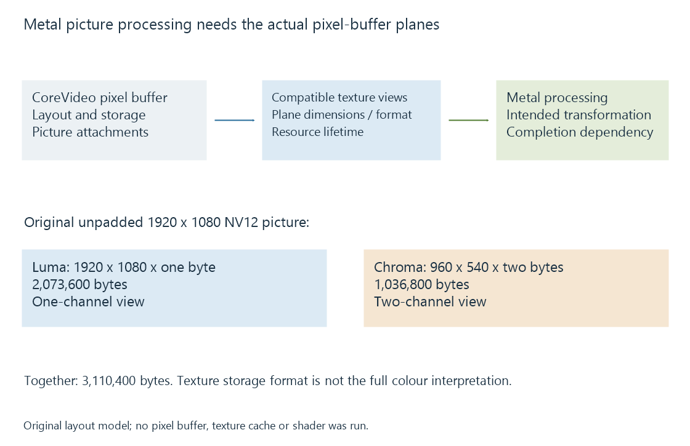

Metal for video processing
Metal exposes Apple GPU graphics and compute work used to process suitable picture textures, with CoreVideo interoperability, layout and synchronization connecting it to media sessions.
Metal is Apple's graphics and compute interface. A media application can use it to process or render suitable picture data produced by its media path.
Compressed-video reconstruction and compression belong to their selected media implementations. Metal adds programmable work around the prepared pictures.
CoreVideo can supply picture storage
VideoToolbox and related media paths use pixel-buffer representations. CoreVideo's Metal texture-cache interface can expose compatible pixel-buffer data as suitable Metal textures.

A texture view describes access to particular picture storage. The actual compatibility depends on the pixel-buffer attributes, storage and requested texture format.
This route can avoid an application manually copying every pixel into an unrelated allocation when suitable shared resources are available.
One picture can have several planes
Consider an original, unpadded 1920 × 1080 NV12 picture:
| Plane | Dimensions | Stored channels per element | Payload |
|---|---|---|---|
| Luma | 1920 × 1080 | 1 byte | 2,073,600 bytes |
| Interleaved chroma | 960 × 540 | 2 bytes | 1,036,800 bytes |
| Complete picture | — | — | 3,110,400 bytes |
An appropriate texture representation can expose the luma through a single-channel eight-bit view and chroma through a two-channel eight-bit view.
The half-sized chroma plane contains paired chroma values. It is not a second smaller full-colour picture.
The layout example assumes compatible linear unpadded storage; real pixel buffers expose their actual row layout and supported resource arrangement.
Texture format does not provide the whole colour description
Sampling an eight-bit channel tells the shader how values are stored. Video range, matrix, primaries and transfer function determine how those values should be interpreted.
A YUV-to-RGB operation needs that interpretation, and an HDR transformation needs the intended output relationship. Otherwise a fast GPU operation can faithfully compute the wrong picture transformation.
The GPU-processing explanation develops operation and coordinate order independently of the execution API.
Completion preserves picture ownership
Metal command work can proceed asynchronously. The source pixel buffer and texture-related resources need suitable lifetimes through their consumers' use.
A following encoder needs a completed, accepted picture representation. Releasing or rewriting storage while the GPU is still reading it violates the intended data relationship.
See Also
- Apple VideoToolbox
- Apple silicon media engines
- GPU compute and video processing
- The hardware decode-filter-encode pipeline
- Media filter graphs